STEP 00 · COURSE OVERVIEW
과정 개요 — IaC와 Terraform
IaC 개념부터 AWS 실습·모듈화까지 이어지는 Terraform 학습 과정의 전체 흐름을 정리한 개요 단계입니다.
과정 개요 — 과정 목표·단계 구성·학습 흐름
00_intro — 과정 개요 (IaC와 Terraform)
Terraform으로 AWS 인프라를 코드로 관리하는 학습 과정의 전체 흐름을 소개하는 단계입니다.
과정 목표
- IaC(Infrastructure as Code)의 개념과 필요성을 이해한다
- Terraform의 동작 방식과 워크플로우(init → plan → apply → destroy)를 익힌다
- AWS 실습을 통해 실제 인프라를 코드로 구축·검증·삭제한다
- 변수·모듈화로 실전 표준 레이아웃까지 확장한다
단계 구성
00_intro — 과정 개요, IaC·Terraform 개념 슬라이드 (이 단계)01_terraform — Provider·required_providers·버전 고정·init/Registry 이론02_practice — step1~4 디렉터리로 단계별 apply하는 AWS 실습03_real — variables/outputs 분리와 모듈화된 실전 레이아웃
학습 흐름
- 개념: IaC와 프로비저닝이 왜 필요한지 이해
- 이론: Terraform provider와 상태(state) 관리 방식
- 실습: 단계별 디렉터리로 네트워크→컴퓨트→EKS 순으로 구축
- 실전: 하드코딩된 값을 변수·모듈로 리팩터링
주의사항
- 실습은 실제 AWS 계정에 리소스를 생성합니다 — NAT Gateway·EC2·RDS·EKS는 과금됩니다
terraform destroy로 실습 후 정리하세요 (역순: step4 → step1)- AWS 태그(
Name)와 Terraform 리소스 이름은 별개입니다 — 코드 식별자는 언더스코어
용어집
전 단계 용어 81개를 자음순으로 정리한 통합 용어집:
단계 구성: 0단계 IaC 개념 · 1단계 Provider·워크플로우 · 2단계 AWS 리소스·실습 · 3단계 변수·실전 패턴
흐름 — 주요 개념·워크플로우
주요 개념
- IaC: 인프라를 코드로 선언해 버전 관리·자동화·재현을 가능하게 하는 방식
- 선언적 vs 명령적: 결과 상태를 선언(Terraform) vs 실행 절차를 기술(스크립트·Ansible)
- 프로비저닝: 선언된 자원을 실제 클라우드에 생성·배치하는 과정
Terraform 워크플로우
terraform init # provider 다운로드·초기화
terraform validate # 문법·참조 검증
terraform plan # 변경 예정 미리보기
terraform apply # 실제 적용
terraform destroy # 전체 삭제
도구·구조 — Ansible 비교·디렉터리 구성
도구 비교
| 구분 | Terraform | Ansible |
|---|
| 목적 | 인프라 프로비저닝 | 구성 관리·배포 |
| 방식 | 선언적 (최종 상태) | 명령적 (실행 절차) |
| 상태 관리 | state 파일로 추적 | 상태 비관리 (멱등성) |
| 언어 | HCL | YAML |
디렉터리 구조
aws-tf/
├── index.html # 루트 포털 (이 파일에서 각 단계로 이동)
├── 00_intro/ # 개요 슬라이드 11장 + 통합 용어집
├── 01_terraform/ # 이론 슬라이드 + provider/VPC 예제
├── 02_practice/ # 실습 .tf + 슬라이드 + check.sh
├── 03_real/ # 실전 표준 레이아웃 + 슬라이드 + origin/ 비교본
├── 10_gitops_infra/ # 저장소+인프라 파이프라인 — main 브랜치
└── 11_gitops_app/ # dev 브랜치 — 앱 배포 파이프라인
슬라이드 — IaC·Terraform 개요 (SVG)
SVG 슬라이드
| 파일 | 내용 |
|---|
| s01-title | 타이틀 |
| s02-roadmap | 전체 과정 로드맵 — 8개 단계 |
| s03-structure | 프로젝트 구조 — 디렉터리·state 경계 |
| s04-target-arch | 최종 아키텍처 — GitOps 완성 모습 |
| s05-iac | IaC 개념 (선언적 vs 명령적) |
| s06-provisioning | 프로비저닝 대상 자원 |
| s07-terraform | Terraform 소개 + HCL 예시 |
| s08-workflow | init → apply 워크플로우 |
| s09-benefits | 장점 5가지 |
| s10-vs-ansible | Ansible 비교 표 |
| s11-summary | 정리 |
이미지를 클릭하면 뷰어가 열리고 ‹ › 버튼 또는 ← → 키로 슬라이드 간 이동합니다.
s01-title · s01-titleSVG
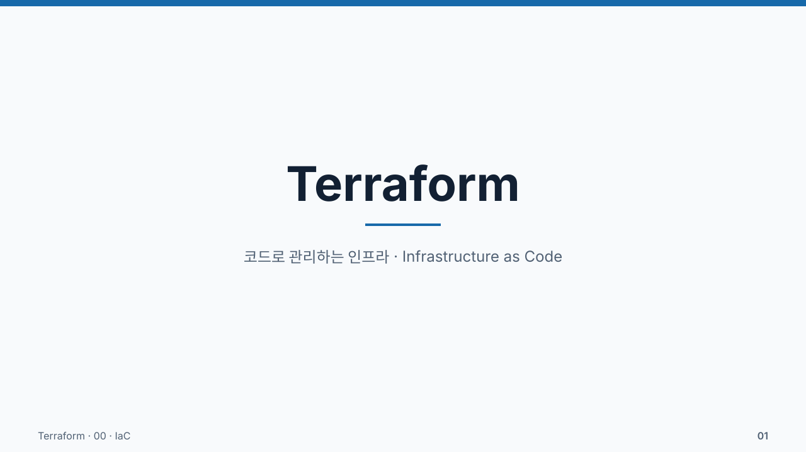
s02-roadmap · s02-roadmapSVG
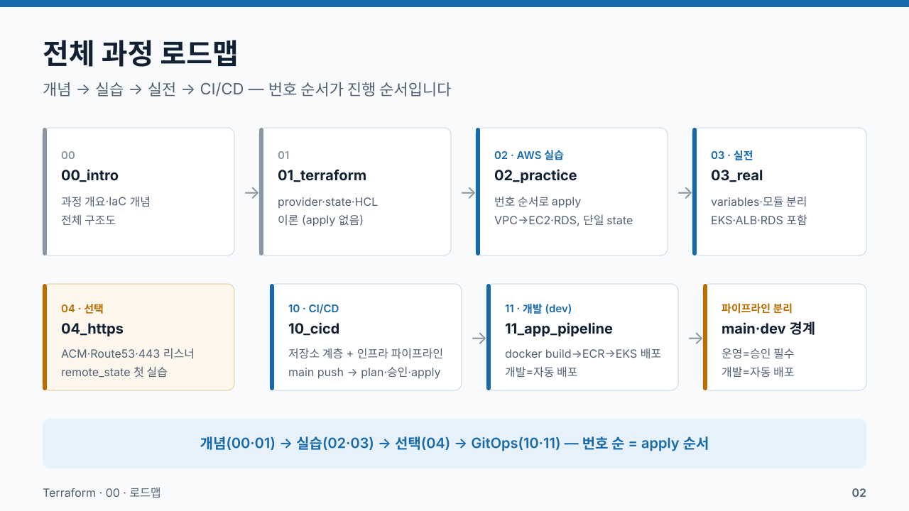
s03-structure · s03-structureSVG
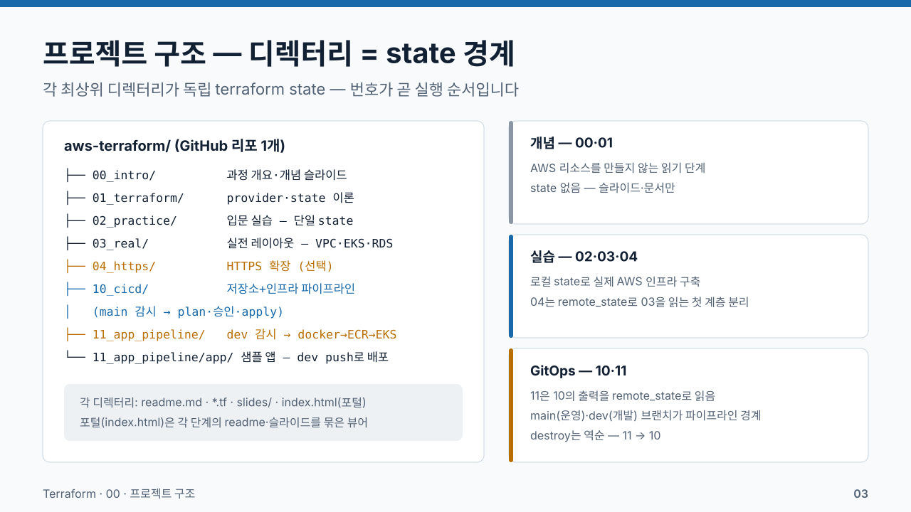
s04-target-arch · s04-target-archSVG
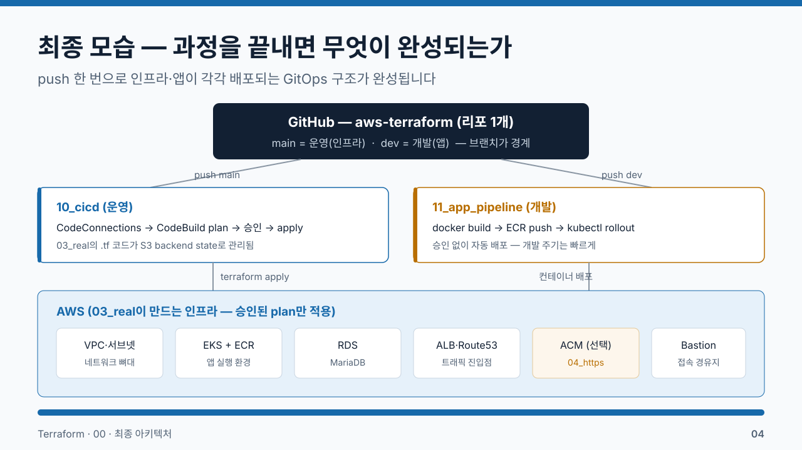
s05-iac · s05-iacSVG
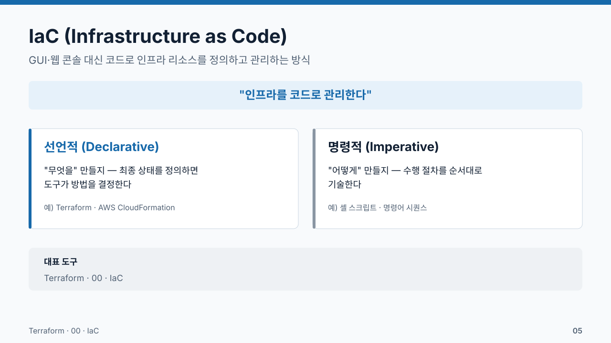
s06-provisioning · s06-provisioningSVG
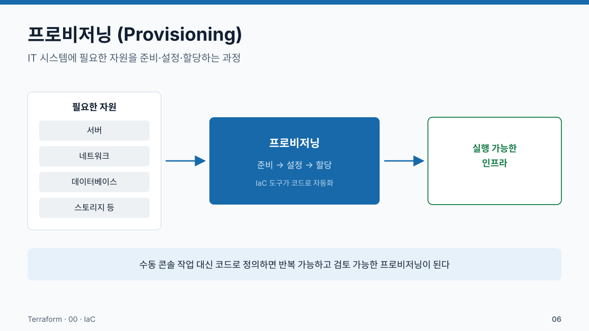
s07-terraform · s07-terraformSVG
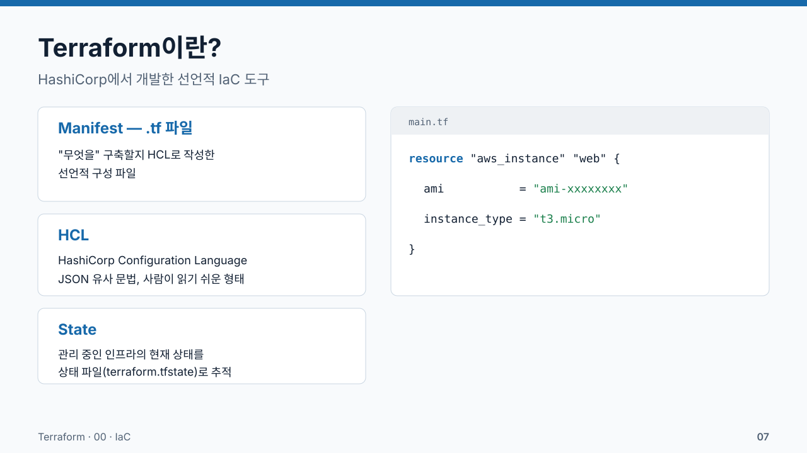
s08-workflow · s08-workflowSVG
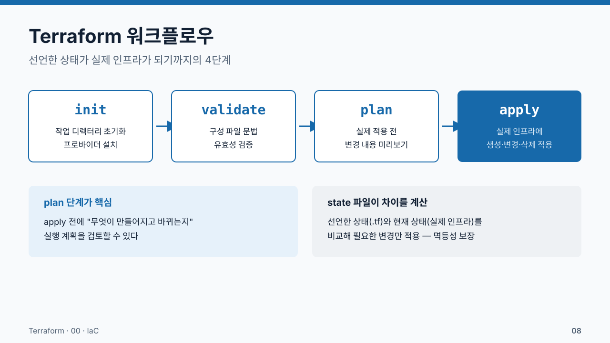
s09-benefits · s09-benefitsSVG
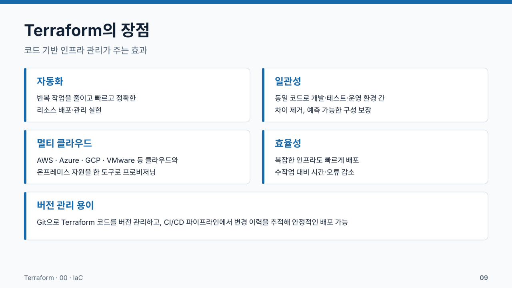
s10-vs-ansible · s10-vs-ansibleSVG
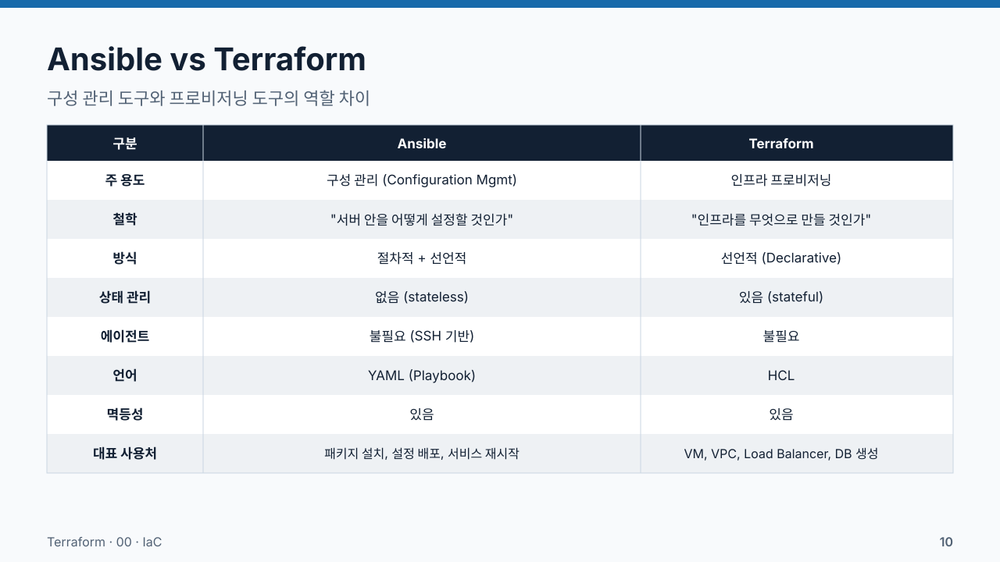
s11-summary · s11-summarySVG
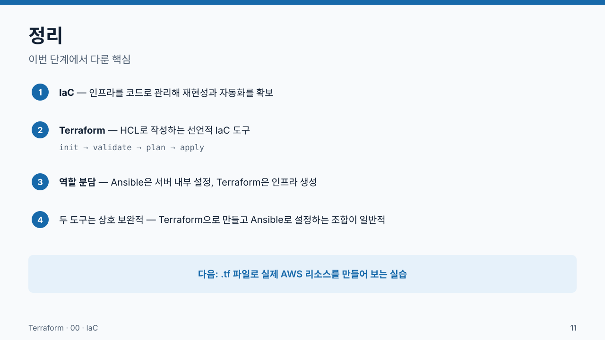